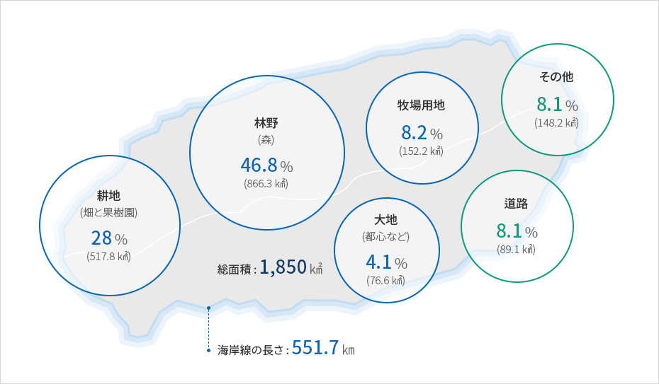

済州島の地理と地質
- Home
- 一般現況
- 地理
- 済州島の地理と地質
地形地質
島の真ん中に聳え立つ漢拏山を中心に、豊富な動物・植物が生息する森林と渓谷、オルムと噴火口、洞窟と草原など興味津々な自然景観に恵まれ天恵の美しさを創り出しています。四面が海に囲まれた済州は、海辺の奇岩や滝、砂浜、小さな島で構成された海岸一帯が絶境です。- 면적 16℃ - 전국의 1.9%, 홍콩의 1.7배, 서울의 3배
- 길이 - 동서 73.3㎞, 남북 40㎞
- 해안선 - 551.78㎞
- 79개의 섬 - 무인도 71개, 유인도 8개

島の中央部は漢拏山を中心に東西面が約3～5度の緩やかな傾斜のある地形です。
地質は堆積岩層や玄武岩などの火山岩類、単成火山から噴出した火山砕屑岩などで構成され、一部地方の粘性土壌・砂質土壌を除けば、島のほとんどが黒褐色の火山灰土で覆われています。
地目の構成と海岸線
